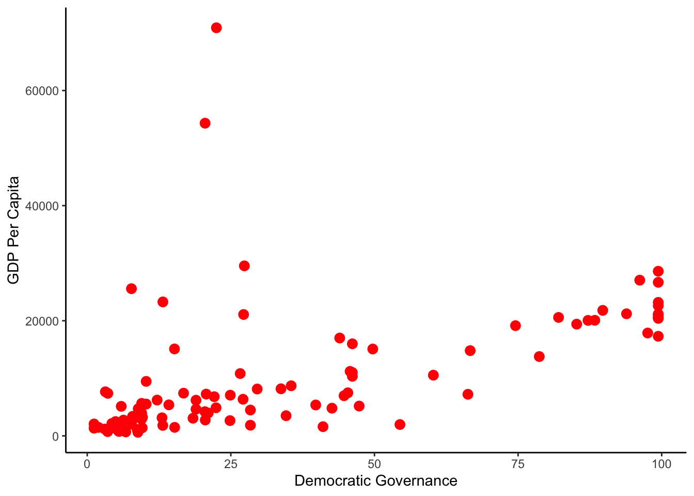
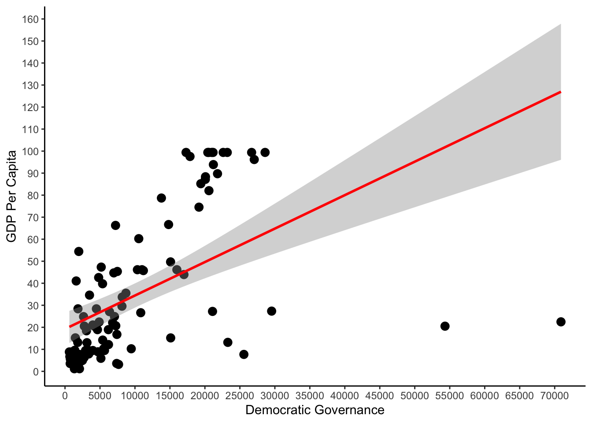

Introduction to regression analysis
As always, start by opening a new script file, give to your file a “good name” and save it in our folder (POL2045). Remove everything from RStudio’s memory and set your working directory
rm(list=ls())
setwd("~POL2045")Today we will learn how to produce a regression model, to do so, we will use a dataset produced by Pippa Norris. The dataset is called “DEMOCRACY CROSS-NATIONAL DATA”, and you may find it on our module’s website on SurreyLearn.
Download the data in stata format (.dta) of the dataset and the respective codebook in the folder entitled POL2045 and import the dataset on RStudio using the haven package and the read_dta function.
As you see there are almost a thousand variables included in the dataset mesuring social, economic, and political characteristics of 193 nations.
Let’s start by exploring our dataset
head(Democracy)As you can see there are many variables included in the dataset. We will only use two variables measuring the level of democracy in 1984 and the second one GDP Per Capita during the same year.
Since we are not using the whole dataset we will create a subset of the main dataset. The subset will include only the two varaibles we will use in our analysis. We will name our new dataset “GDP_Dem”. To do so we use the subset() function along with the c() function.
Our new dataset consists of two variables only: Dem_Gov1984 and GDPPC1984.
We may summarise our variables by using the summary() function. To save time I will ask RStudio to provide a summary of our dataset since the dataset only consists of the two varaibles we are interested in. You may see that we have a few NA’s in the dataset and that they are both continuous variables.
Pearson’s r
We will start by calculating Pearson’s r to examine the strenght of the association between the two variables. We observe that the correlation coefficient is equal to ca. \(0.52\) that indicates a positive and not very strong statistical relationship between the two variables.
cor(GDP_Dem, use="complete.obs") # remember that we have NA's in our dataset## Dem_Gov1984 GDPPC1984
## Dem_Gov1984 1.0000000 0.5198087
## GDPPC1984 0.5198087 1.0000000We may also draw a scatterplot to examine this relationship. To plot our scatterplot we will use the ggplot2 package.
library(ggplot2)
plot.1<-ggplot(GDP_Dem, aes(x=Dem_Gov1984, y=GDPPC1984)) +geom_point(size=3,colour="red") +
theme_classic()+
labs(x="Democratic Governance", y="GDP Per Capita")
plot.1
By calculating the correlation coefficient we learned that there is a positive and medium range association between Democracy and GDP Per Capita. The scatterplot helped us visualise this relationship, we observe that there is a positive and linear relationship between the two variables.
Bivariate regression analysis
To examine how the one variable affects the other , what changes it triggers, we will run a regression analysis. We will use the lm() function.
The two main arguments of the lm() function are outlined below:
| Argument | Description |
|---|---|
| formula | A mathematical description of the model, y ~ x1+x2+x3+… or DV~IV1+IV2+IV3 |
| data | The name of the dataset we would like to use, the dataset that contains the variables we are interested in. |
model.1 <- lm(Dem_Gov1984~GDPPC1984, data=GDP_Dem)The lm() function calculated the relationship between Democracy and GDP Per Capita, in RStudio language our formula is an object and we can give it a name. We named our model model.1. By giving a name to an object we can easily calculate further quantities and plot our results.
Let’s start by examing the outcome of the regression analysis. We can see how our model looks like by using the summary() function.
summary(model.1)##
## Call:
## lm(formula = Dem_Gov1984 ~ GDPPC1984, data = GDP_Dem)
##
## Residuals:
## Min 1Q Median 3Q Max
## -104.470 -16.507 -6.817 16.879 53.869
##
## Coefficients:
## Estimate Std. Error t value Pr(>|t|)
## (Intercept) 1.924e+01 3.777e+00 5.094 1.70e-06 ***
## GDPPC1984 1.519e-03 2.522e-04 6.024 2.99e-08 ***
## ---
## Signif. codes: 0 '***' 0.001 '**' 0.01 '*' 0.05 '.' 0.1 ' ' 1
##
## Residual standard error: 27.76 on 98 degrees of freedom
## (95 observations deleted due to missingness)
## Multiple R-squared: 0.2702, Adjusted R-squared: 0.2628
## F-statistic: 36.28 on 1 and 98 DF, p-value: 2.987e-08Note: To disable scientific notation in R, in other words to display regular numbers instead of using the e+10-like notation, run the function below to disable it.
options(scipen = 999)
Interpreting the Regression Output
Let’s start by having a look at the formula:
lm(formula = Dem_Gov1984 ~ GDPPC1984, data = GDP_Dem)Dem_Gov1984 : is our dependent variable
GDPPC1984 : is our independent variable
Residuals:
## Min 1Q Median 3Q Max
## -104.470 -16.507 -6.817 16.879 53.869
Residuals : The difference between the observed values and the predicted values of GDPPC1984.
Coefficients:
Estimate Std. Error t value Pr(>|t|)
(Intercept) 1.924e+01 3.777e+00 5.094 1.70e-06 ***
GDPPC1984 1.519e-03 2.522e-04 6.024 2.99e-08 ***This part of the output describes the coefficients for the intercept and the independent variables.
Remember the general formula: Y=a+bx+e
We can re-write the formula using the coefficients to describe the relationship between Dem_Gov1984 and GDPPC1984.
Dem_Gov1984 = 1.92 + (1.51 * GDPPC1984)
This tells us that for each unit increase in the variable Dem_Gov1984, GDPPC1984 increases by 1.51
The standard error estimates the standard deviation of the sampling distribution of the coefficients in our model.
The t statistic , is used to conduct hypothesis tests on the regression coefficients. The t-test is obtained by dividing the coefficients by the standard error.
Signif. codes: 0 ‘***’ 0.001 ‘**’ 0.01 ‘*’ 0.05 ‘.’ 0.1 ‘ ’ 1The p-value for each of the coefficients included in the model. According to the null hypothesis the value of the coefficient we are interested in is zero. Remember that hypothesis testing is based on the null hypothesis, the p-value will tell us whether we can reject or not the null hypothesis.
R-squared: 0.2702, Adjusted R-squared: 0.2628 The R-squared and adjusted R-squared tell us how much of the variance in our model is accounted for by the independent variable.
The adjusted R-squared is a modified version of R-squared that has been adjusted for the number of predictors in the model.
Visualising the relationship
Let’s plot the elationship between the two variables, dependent and independent, but this time we will include the regression line.
plot.2<-ggplot(GDP_Dem, aes(x=GDPPC1984, y=Dem_Gov1984)) +geom_point(size=3) +
stat_smooth(method = "lm", col = "red")+
theme_classic()+
scale_x_continuous(breaks = seq(0, 75000, by = 5000))+
scale_y_continuous(breaks = seq(0, 200, by = 10))+
labs(x="Democratic Governance", y="GDP Per Capita")
plot.2## Warning: Removed 95 rows containing non-finite values (stat_smooth).## Warning: Removed 95 rows containing missing values (geom_point).
The graph replicates the table, when our independent variable is equal to zero, then the starting point of the line (the Y axis) is predicted to be approximately 20, the same as in our table (19.24).
By looking at the regression line we should also observe that the position of the line matches the coefficients we estimated, and reported in our table. The coeeficient for the variable describing GDP per Capita GDPPC1984 is 0.001519. The line seems to reflect this. First of all, the direction of the line imply that there is a positive relationship between the dependent and the independent variable. Indeed, the positive sign of the coefficient represents this positive relationship between the two variables. In other words, higher levels of GDP per Capita are associated with higher levels of Democracy. For each additional unit of GDP per Capita, Democratic Governance increases by 0.001519.
An additional package to produce professional regression outputs
R can make complicated things easy and the package below will save you a lot of time. In your assignments you should have tables similar to the ones you see in official reports and journal publications. The stargazer package will allow to do this without having to update your table multiple times.
library(stargazer)
stargazer(model.1,
type="html",
out="model_one.doc")Note: If you are using LATEX instead of Word you don’t have to specify the type and the output (out).